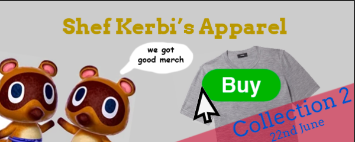
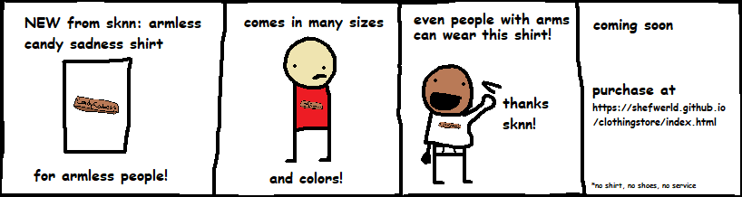
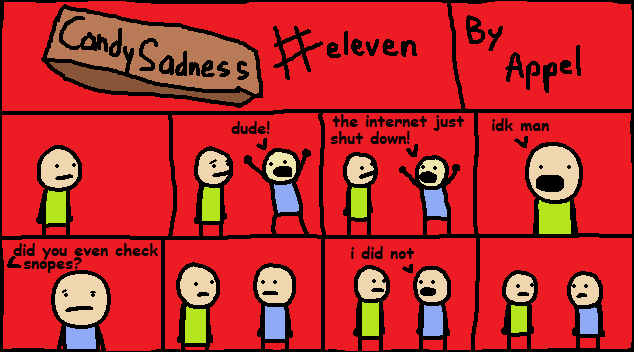

"41 Days of Uninformation Later..."
ANNOUNMENT:
by Shef Kerbi
We recenly employed a new employee, Austin, into the news gang so that we could get more news and push out news reports quicker. Unfortunately, we've come to determine that the quality of his articles may not be on par with the expectations of the Shef Kerbi News Network. Since we still believe that Austin should receive at least some chance to see how the public will react, we've published a separate article containing just Austin's articles.
--
SHEF KERBI'S APPAREL
by shef kerbi

Shef Kerbi's Apparel: Collection 2 released on the 22nd June to a ton of success. We provided a bunch of new merchandise, along with introducting game controllers for the Xbox One, PS4 and Nintendo Switch after the Shef Kerbi Direct, which was released on the 7th of July.
From now until the 17th of June, everything on the store is 25% off, so now is the perfect time to get some good deals before we close shop temporarily ready for Collection 3!
--

Global Warming & Its Effects On The World
by Apple the Cat
The effects of climate change are being felt all around the world. "Global warming is out of control", a professor at Dreem Lend University says. "It's hard to teach geography when my globe is literally on fire." Additionally, there has been a worrying change in weather patterns, which scientists attribute to the greenhouse effect. We had an interview with one anonymous resident of Flat Land to better understand these problems.
Guy: Okay.
A: So, how has the greenhouse effect affected your life?
G: One day I woke up and my house and car were covered in green paint.
A: Wow, sounds cool.
G: No, my car's wheels were stuck to the ground.
A: So, uh, would this green paint, uh, totally theoretically, uh, you know, cover any stains on the exterior of your house?
G: I- uh, what?
A: Like, uh, specifically, what about dried poop stains? One that says, like, in all capitals, uh, "COPYCAT"?
G: ...
A: Ahem, where did this green paint come from?
G: ...The sky.
A: From the sky?
G: Yeah, the sky.
A: Do you have the sky's number?
G: What?
A: Uh, we're running low on time here, anything you want to finish with?
G: Mom! Look! I'm on TV!
A: Okay, I'm Apple the Cat, and that's all from this sknn interview.
Banjo is Back!
by Apple the Cat
Banjo-Kazooie is now a DLC character in Super Smash Bros. Ultimate. That's not really important, I just wanted to write about it.
Pete isn't back though!
by CrazeePi's Disembodied Voice
Come on Sakurai, where is PETE in smash????? give us PETE already!!!
Sorry, this wasn't important news. I just wanted to write about PETE IN SMASH GIVE US PETE!!!
Now I don't wanna give my own opionion but...
OPIONION WITH SHEF KERBI AND BON STARBUCKLE
Now with 15% more real people!
So we told you Shef Kerbi News Network fans on our Scratch page that you could post anything with the #SKNN hashtag and you could end up in our paper! In this episode, we'll respond to some of your feedback with the new SKNN format, as well as show some of your cool stuff!
We began this issue's section with
"By the way Shef Kerbi direct is out now
https://scratch.mit.edu/projects/319852262"
and here were your responses:
openPoll wrote:
"gardie gets paid(?) to pretend that he/she/it/they has/have a job when in reality someone else is doing it for him/her/it/them. thats one lucky pokémon"
Wow good thing you listed all the potential pronouns otherwise you could've gotten cancelled on social media.
Anyway, we pay our employees for Shef Kerbi's Apparel the same way that they are paid on Shef Kerbi News Network: Yes I do pay (i promise). The Shef Chop is an execption because we don't trust the Scratch economy to be stable because of all the kids in that country.
LegoManiac04 wrote:
"You need to be a Forum Helper."
no
Anyway, that's too many "real people" for SKNN to handle, so here's some of the boys as well:
izgreeg22 wrote:
"You guys have nice shoes but why did you distort Shef Kerbi like that? Wouldn't Shef Kerbi not like that?"
Dude, that was intentional. We're going to be bringing out more shoes for Collection 3, so we hope you feel less uncomfortable with those
tuffbunofficial wrote:
"so when i was eating dinner tiff complained because she was at dreem lend university because she have intelligence 100 she was going to do geography but then the fire alarms went off and everyone (like 11 people lol) had to evacuate the university. do you know what happened?"
Read our article Global Warming & Its Effects On The World (hopefully you already have so the advertisers know you read the entire article so they'll give us more money and more ads) on it. I heard that Apple knew exactly what happened.
OPIONION NEWS
TSM_Liquid_FaZe_Ninja has come back from the Bahamas and is now home. And he bought our merch! Look at him with our Mini Keanu Reeves shirt!!

If you would like to submit your own opionion, just go to our social media, on Twitter, Instagram or Scratch.
But prefably Scratch because that's what everyone uses
Ask Bon and Bon's Cat
Dear Bon,
What's a good TV show you reccomend?
TV Thom
IMO the best tv show is gazing wistfully for hours at a time out a window. but if you don't want to do that you can watch:
- Crojack Norseman
- Warks and Steckreation
- 40 Lock
- Far Neck
- Birebye
----------------
breaking whether news
by reali
Recently, the hurricane named DisneyLand picked up the entire country of canada and threw it away.
It has been discovered that canada is now on the moon.
Construction workers have begun working on getting canada back to it(')s original location.
Destroying Currents!
by Zeke Teddy
Someone saw a piece of rock flying through space recently, which my very reliable source Mr. Nathan U. T. Job claims will result in the end of the world. I asked him about this and when the world is actually ending, and he said roughly one googol years. (I would've thought it'd be one bing years, but I guess not.) You all might want to watch out for that.
In other news, I guess a hurricane destroyed Canada / threw Canada to the moon, but thankfully I don't think North America is on Popp Stah so we don't really need to worry about that.
BREAKING sports JOHN NEWS GAME
by John Gameman
recantlie smelly poop bad loser dwane johngameman profesonel game and man manson not even good lose arm to cool new sport spacewhale wresling and sended towards planenet "popp stah" arm is realy strong and in arm shap but john gameman professonil game man and man man wich make john gameman relly good at space whale wesling and wresles 1000 more space whale than BIG LOSER dwane not john gameman porfessonal game and manson i hat you dwane john gameman proefsonal game and manmanson i am john gameman i am profesonal game and man man not son or dwan YOU ARE NOT BETER AT ME AT CALL OF DUTY I WIL DESROYE YOU!!!! so i hit dwane john gameman professonal gameman nd man man son with space whale and destroy him into ALL pieces towars popp stah and ALL peces relly strong and in arm shap what he arm????
EDITOR'S NOTE: No evidence of multiple space rock arms has been found. There is only one space rock arm and it is dooming us all.
COMIX
by Apple the Cat and Reali
Apple is back, meaning there is Candy Sadness anymore, which has made everyone unsad.

Also, here's a new comic from Reali:

weather
by Zeke Teddy
Today, it's entirely too rainy and windy and stormy and I hate it, max 2 min 1
Tomorrow it's still rainy, can we go back to the changing temperatures at least then it wasn't raining. Anyway it's between 1 and 7
{kind=link}
THANK YOU FOR WATCH. PLEASE TUN E IN NEXT TIME FOR MORE NESW

Shef Kerbi News Network follows the guidelines and conventions set by the 1984 High Quality News Act of Dreem Lend, which states
that any news published is to be of a high quality, is to remain unbiased and to show all sides of a news report, does not attack anyone, and protects the privacy
of people whose identities don't want to be revealed.
If you would like to file a complaint regarding content use, please message SKNN through our Scratch account. We also have a Twitter and Instagram account if you
prefer.
Shef Kerbi News Network respects the ancestors of Cappy Town, and understands that they are the reason why Dreem Lend exists.
Shef Kerbi News Network is proud to be a subsidiary of Shef Werld
this website is best viewed with Ned's Escape